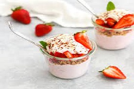
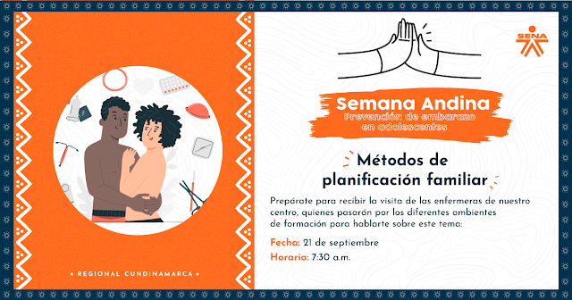

Lo más destacado

Riego Automatizado

Gallinas Ponedoras

Vaca Lechera

Tractor para la agricultura a precisión

Vaca Lucerna

Cabras
Productos del Día

Huevos de Gallina
Producto de CBAGRO

Postre de Fresas Delicioso
Producto de CBAGRO
Miel de abejas
Producto de CBAGRO
Próximos Eventos

VACUNACION COVID 19
AMOR Y AMISTAD
